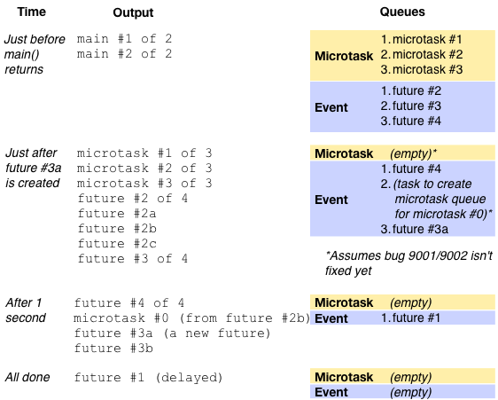

The Event Loop and Dart
Written by Kathy Walrath
September 2013 (updated October 2013)
Asynchronous code is everywhere in Dart. Many library functions return Future objects, and you can register handlers to respond to events such as mouse clicks, file I/O completions, and timer expirations.
This article describes Dart’s event loop architecture, so that you can write better asynchronous code with fewer surprises. You’ll learn options for scheduling future tasks, and you’ll be able to predict the order of execution.
Before reading this article, you should be familiar with the basics of using Future-based APIs.
Basic concepts
If you’ve written UI code, you’re probably familiar with the concepts of the event loop and the event queue. They ensure that graphics operations and events such as mouse clicks are handled one at a time.
Event loops and queues
An event loop’s job is to take an item from the event queue and handle it, repeating these two steps for as long as the queue has items.

The items in the queue might represent user input, file I/O notifications, timers, and more. For example, here’s a picture of the event queue that contains timer and user input events:

All of that might be familiar from non-Dart languages you know. Now let’s talk about how it fits into the Dart platform.
Dart’s single thread of execution
Once a Dart function starts executing, it continues executing until it exits. In other words, Dart functions can’t be interrupted by other Dart code.
As the following figure shows, a Dart app starts execution when its main isolate executes the app’s main() function. After main() exits, the main isolate’s thread begins to handle any items on the app’s event queue, one by one.

Actually, that’s a slight oversimplification.
Dart’s event loop and queues
A Dart app has a single event loop with two queues—the event queue and the microtask queue.
The event queue contains all outside events: I/O, mouse events, drawing events, timers, messages between Dart isolates, and so on.
The microtask queue is necessary because event-handling code sometimes needs to complete a task later, but before returning control to the event loop. For example, when an observable object changes, it groups several mutation changes together and reports them asychronously. The microtask queue allows the observable object to report these mutation changes before the DOM can show the inconsistent state.
The event queue contains events both from Dart and from elsewhere in the system. Currently, the microtask queue contains only entries originating from within Dart code, but we expect the web implementation to plug into the browser microtask queue. (For the latest status, see dartbug.com/13433.)
As the following figure shows, when main() exits, the event loop starts its work. First, it executes any microtasks, in FIFO order. Then it dequeues and handles the first item on the event queue. Then it repeats the cycle: execute all microtasks, and then handle the next item on the event queue. Once both queues are empty and no more events are expected, the app’s embedder (such as the browser or a test framework) can dispose of the app.

Although you can predict the order of task execution, you can’t predict exactly when an event loop will take a task off the queue. The Dart event handling system is based on a single-threaded cycle; it isn’t based on ticks or any other kind of time measurement. For example, when you create a delayed task, an event is enqueued at the time you specify. However, that event can’t be handled until everything before it in the event queue (as well as every single task in the microtask queue) is handled.
Tip: Chain futures to specify task order
If your code has dependencies, make them explicit. Explicit dependencies help other developers to understand your code, and they make your program more resistant to code refactoring.
Here’s an example of the wrong way to code:
// BAD because of no explicit dependency between setting and using
// the variable.
future.then(...set an important variable...);
Timer.run(() {...use the important variable...});
Instead, write code like this:
// BETTER because the dependency is explicit.
future.then(...set an important variable...)
.then((_) {...use the important variable...});
The better code uses then() to specify that the variable must be set before it can be used. (You can use whenComplete() instead of then() if you want the code to execute even if an error occurs.)
If using the variable takes time and can be done later, consider putting that code in a new Future:
// MAYBE EVEN BETTER: Explicit dependency plus delayed execution.
future.then(...set an important variable...)
.then((_) {new Future(() {...use the important variable...})});
Using a new Future gives the event loop a chance to process other events from the event queue. The next section gives details on scheduling code to run later.
How to schedule a task
When you need to specify some code to be executed later, you can use the following APIs provided by the dart:async library:
- The Future class, which adds an item to the end of the event queue.
- The top-level scheduleMicrotask() function, which adds an item to the end of the microtask queue.
Examples of using these APIs are in the next section under Event queue: new Future() and Microtask queue: scheduleMicrotask().
Use the appropriate queue (usually: the event queue)
Whenever possible, schedule tasks on the event queue, with Future. Using the event queue helps keep the the microtask queue short, reducing the likelihood of the microtask queue starving the event queue.
If a task absolutely must complete before any items from the event queue are handled, then you should usually just execute the function immediately. If you can’t, then use scheduleMicrotask() to add an item to the microtask queue. For example, in a web app use a microtask to avoid prematurely releasing a js-interop proxy or ending an IndexedDB transaction or event handler.

Event queue: new Future()
To schedule a task on the event queue,
use new Future() or new Future.delayed().
These are two of the
Future
constructors defined in the dart:async library.
To immediately put an item on the event queue, use new Future():
// Adds a task to the event queue.
new Future(() {
// ...code goes here...
});
You can add a call to then() or whenComplete() to
execute some code immediately after the new Future completes.
For example, the following code prints “42” when
the new Future’s task is dequeued:
new Future(() => 21)
.then((v) => v*2)
.then((v) => print(v));
To enqueue an item after some time elapses, use new Future.delayed():
// After a one-second delay, adds a task to the event queue.
new Future.delayed(const Duration(seconds:1), () {
// ...code goes here...
});
Although the preceding example adds the task to the event queue after one second, that task can’t execute until the main isolate is idle, the microtask queue is empty, and previously enqueued entries in the event queue are gone. For example, if the main() function or an event handler are running an expensive computation, the task can’t execute until after that computation completes. In that case, the delay might be much more than one second.
Fun facts about Future:
- The function that you pass into Future’s then() method executes immediately when the Future completes. (The function isn’t enqueued, it’s just called.)
- If a Future is already complete before then() is invoked on it, then a task is added to the microtask queue, and that task executes the function passed into then().
- The Future() and Future.delayed() constructors don’t complete immediately; they add an item to the event queue.
- The Future.value() constructor completes in a microtask, similar to #2.
- The Future.sync() constructor executes its function argument immediately and (unless that function returns a Future) completes in a microtask, similar to #2.
Microtask queue: scheduleMicrotask()
The dart:async library defines scheduleMicrotask() as a top-level function. You can call scheduleMicrotask() like this:
scheduleMicrotask(() {
// ...code goes here...
});
Due to bugs 9001 and 9002, the first call to scheduleMicrotask() schedules a task on the event queue; this task creates the microtask queue and enqueues the function specified to scheduleMicrotask(). As long as the microtask queue has at least one entry, subsequent calls to scheduleMicrotask() correctly add to the microtask queue. Once the microtask queue is empty, it must be created again the next time scheduleMicrotask() is called.
The upshot of these bugs: The first task that you schedule with scheduleMicrotask() seems like it’s on the event queue.
A workaround is to put your first call to scheduleMicrotask() before your first call to new Future(). This creates the microtask queue before executing other tasks on the event queue. However, it doesn’t stop external events from being added to the event queue. It also doesn’t help when you have a delayed task.
Another way to add a task to the microtask queue is to invoke then() on a Future that’s already complete. See the previous section for more information.
Use isolates or workers if necessary
What if you have a compute-intensive task to run? To keep your app responsive, you should put the task into its own isolate or worker. Isolates might run in a separate process or thread, depending on the Dart implementation. In 1.0 we don’t expect web apps to support isolates or Dart-language workers. However, you can use the dart:html Worker class to add a JavaScript worker to a Dart web app.
How many isolates should you use? For compute-intensive tasks, you should generally use as many isolates as you expect to have CPUs available. Any additional isolates are just wasted if they’re purely computational. However, if the isolates perform asynchronous calls—to perform I/O, for example—then they won’t spend much time on the CPUs, so having more isolates than CPUs makes sense.
You can also use more isolates than CPUs if that’s a good architecture for your app. For example, you might use a separate isolate for each piece of functionality, or when you need to ensure that data isn’t shared.
Test your understanding
Now that you’ve read all about scheduling tasks, let’s test your understanding.
Remember, you shouldn’t depend on Dart’s event queue implementation to specify task order. The implementation might change, and Future’s then() and whenComplete() methods are a better alternative. Still, won’t you feel smart if you can answer these questions correctly?
Question #1
What does this sample print out?
import 'dart:async';
main() {
print('main #1 of 2');
scheduleMicrotask(() => print('microtask #1 of 2'));
new Future.delayed(new Duration(seconds:1),
() => print('future #1 (delayed)'));
new Future(() => print('future #2 of 3'));
new Future(() => print('future #3 of 3'));
scheduleMicrotask(() => print('microtask #2 of 2'));
print('main #2 of 2');
}
The answer:
main #1 of 2 main #2 of 2 microtask #1 of 2 microtask #2 of 2 future #2 of 3 future #3 of 3 future #1 (delayed)
That order should be what you expected, since the example’s code executes in three batches:
- code in the main() function
- tasks in the microtask queue (scheduleMicrotask())
- tasks in the event queue (new Future() or new Future.delayed())
Keep in mind that all the calls in the main() function execute synchronously, start to finish. First main() calls print(), then scheduleMicrotask(), then new Future.delayed(), then new Future(), and so on. Only the callbacks—the code in the closure bodies specified as arguments to scheduleMicrotask(), new Future.delayed(), and new Future()—execute at a later time.
Question #2
Here’s a more complex example. If you can correctly predict the output of this code, you get a gold star.
import 'dart:async';
main() {
print('main #1 of 2');
scheduleMicrotask(() => print('microtask #1 of 3'));
new Future.delayed(new Duration(seconds:1),
() => print('future #1 (delayed)'));
new Future(() => print('future #2 of 4'))
.then((_) => print('future #2a'))
.then((_) {
print('future #2b');
scheduleMicrotask(() => print('microtask #0 (from future #2b)'));
})
.then((_) => print('future #2c'));
scheduleMicrotask(() => print('microtask #2 of 3'));
new Future(() => print('future #3 of 4'))
.then((_) => new Future(
() => print('future #3a (a new future)')))
.then((_) => print('future #3b'));
new Future(() => print('future #4 of 4'));
scheduleMicrotask(() => print('microtask #3 of 3'));
print('main #2 of 2');
}
The output, assuming bugs 9001/9002 aren’t fixed:
main #1 of 2 main #2 of 2 microtask #1 of 3 microtask #2 of 3 microtask #3 of 3 future #2 of 4 future #2a future #2b future #2c future #3 of 4 future #4 of 4 microtask #0 (from future #2b) future #3a (a new future) future #3b future #1 (delayed)
Like before, the main() function executes, and then everything on the microtask queue, and then tasks on the event queue. Here are a few interesting points:
- When the then() callback for future 3 calls new Future(), it creates a new task (#3a) that’s added to the end of the event queue.
- All the then() callbacks execute as soon as the Future they’re invoked on completes. Thus, future 2, 2a, 2b, and 2c execute all in one go, before control returns to the embedder. Similarly, future 3a and 3b execute all in one go.
- If you change the 3a code from
then((_) => new Future(...))tothen((_) {new Future(...); }), then “future #3b” appears earlier (after future #3, instead of future #3a). The reason is that returning a Future from your callback is how you get then() (which itself returns a new Future) to chain those two Futures together, so that the Future returned by then() completes when the Future returned by the callback completes. See the then() reference for more information.
Annotated sample and output
Here are some figures that might clarify the answer to question #2. First, here’s the annotated program source:

And here’s what the queues and output look like at various points in time, assuming no external events come in:

Summary
You should now understand Dart’s event loops and how to schedule tasks. Here are some of the major concepts of event loops in Dart:
- A Dart app’s event loop executes tasks from two queues: the event queue and the microtask queue.
- The event queue has entries from both Dart (futures, timers, isolate messages, and so on) and the system (user actions, I/O, and so on).
- Currently, the microtask queue has entries only from Dart, but we expect it to be merged with the browser microtask queue.
- The event loop empties the microtask queue before dequeuing and handling the next item on the event queue.
- Once both queues are empty, the app has completed its work and (depending on its embedder) can exit.
- The main() function and all items from the microtask and event queues run on the Dart app’s main isolate.
When you schedule a task, follow these rules:
- If possible, put it on the event queue (using new Future() or new Future.delayed()).
- Use Future’s then() or whenComplete() method to specify task order.
- To avoid starving the event loop, keep the microtask queue as short as possible.
- To keep your app responsive, avoid compute-intensive tasks on either event loop.
- To perform compute-intensive tasks, create additional isolates or workers.
As you write asynchronous code, you might find these resources helpful:
- Using Future Based APIs
- Futures and Error Handling
- dart:async - Asynchronous Programming section of the library tour
- dart:async API reference